Golden Gallery
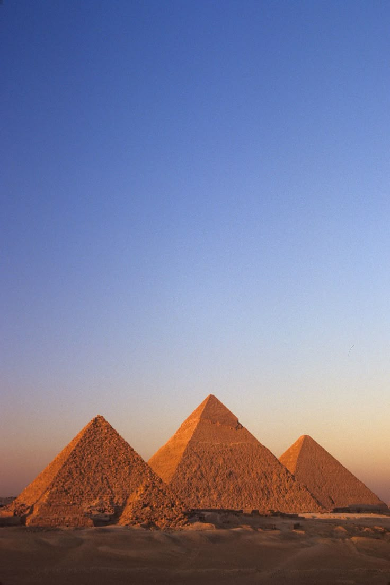
Pyramids
The Great Pyramid of Giza, also known as the Pyramid of Khufu, is the largest and oldest of the three pyramids. It was built around 2600 BC for Pharaoh Khufu and originally reached a height of about 146 meters. The pyramid was constructed using approximately 2.3 million limestone blocks and is the only surviving wonder of the Seven Wonders of the Ancient World. It stands as a remarkable example of ancient engineering and architectural precision. The Pyramid of Khafre is the second-largest pyramid and was built for Pharaoh Khafre. Although it is slightly smaller than the Great Pyramid, it appears taller because it is built on elevated ground. A unique feature of this pyramid is that it still preserves part of its original smooth casing stones at the top. It is also closely associated with the nearby Great Sphinx, which is believed to represent Khafre. The Pyramid of Menkaure is the smallest of the three pyramids and was built for Pharaoh Menkaure. It stands at about 65 meters in height and is known for its more intricate temple complex compared to the other pyramids. Despite its smaller size, it remains an important part of the Giza Plateau and reflects the continued evolution of pyramid construction in ancient Egypt.
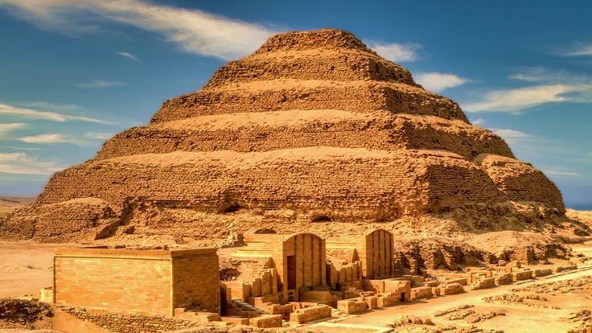
Step Pyramid of Djoser
The Step Pyramid of Djoser is located in Saqqara, Egypt, and is considered the earliest large-scale stone pyramid ever built. It was constructed during the 27th century BC for Pharaoh Djoser of the Third Dynasty. The pyramid was designed by the famous architect Imhotep, who is considered one of the first known architects in history. Unlike the smooth-sided pyramids of Giza, the Step Pyramid has a unique design made of six stacked mastabas (rectangular structures), giving it a stepped appearance. It originally stood about 62 meters tall and was part of a large funerary complex that included temples, courtyards, and ceremonial buildings. The Step Pyramid represents a major turning point in ancient Egyptian architecture, as it marked the transition from simple tombs to the monumental pyramid structures that later became iconic. Today, it remains one of the most important archaeological sites in Egypt and a key example of early pyramid development.
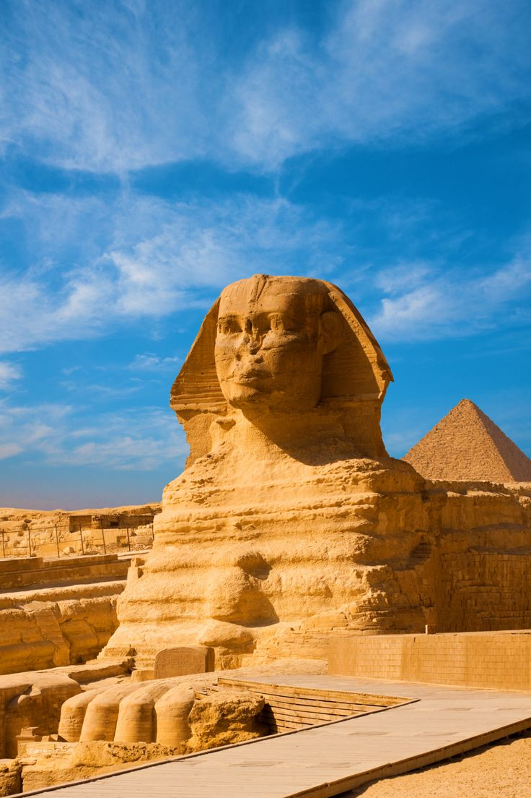
Abu El Hol
The Great Sphinx of Giza is one of the most famous monuments in the world and a symbol of ancient Egyptian civilization. It is a massive limestone statue with the body of a lion and the head of a human, believed to represent Pharaoh Khafre. The Sphinx was built around 2500 BC during the Old Kingdom period and is located on the Giza Plateau near the pyramids. The statue measures about 73 meters in length and 20 meters in height, making it one of the largest statues ever carved from a single piece of stone. The lion’s body symbolizes strength, while the human head represents wisdom and intelligence, reflecting the power of the pharaoh. Over time, the Sphinx has suffered damage due to natural erosion, especially from wind and sand which affected details like the nose that is now missing. The Great Sphinx has always been surrounded by mystery and legends. Historians believe it served as a guardian of the Giza pyramids, protecting the tombs of the pharaohs. Today, it remains one of Egypt’s most important archaeological sites and attracts millions of visitors from around the world every year.

Karnak Temple
The Karnak Temple Complex is one of the largest and most important religious sites in ancient Egypt. It is located in Luxor and was built over many centuries by different pharaohs, starting around 2000 BC. The temple was mainly dedicated to the god Amun-Ra, along with other deities such as Mut and Khonsu. One of its most famous features is the Great Hypostyle Hall, which contains 134 massive columns arranged in a forest-like structure. These columns and walls are covered with detailed carvings and hieroglyphs that record religious rituals, historical events, and royal achievements from ancient Egypt. Karnak was not only a place of worship but also a major center for religious festivals, especially the Opet Festival, which celebrated the relationship between the pharaoh and the gods. Today, it remains one of Egypt’s most visited archaeological sites and a powerful symbol of ancient Egyptian civilization.
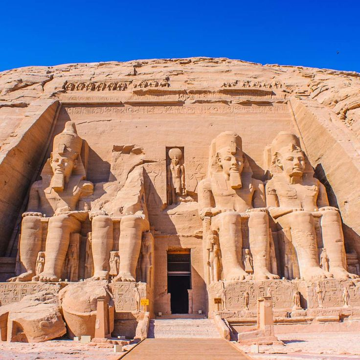
Abu Simbel Temples
The Abu Simbel Temples are two massive rock-cut temples located in southern Egypt near the border with Sudan. They were built during the reign of Pharaoh Ramesses II in the 13th century BC to honor himself and his queen Nefertari, as well as the gods Amun, Ra-Horakhty, and Ptah. The Great Temple features four colossal statues of Ramesses II seated at its entrance, each standing about 20 meters tall. Inside the temple, there are large halls decorated with carvings that depict the pharaoh’s military victories, especially the Battle of Kadesh. The second temple, dedicated to Queen Nefertari and the goddess Hathor, is smaller but equally impressive in design and detail. One of the most remarkable facts about Abu Simbel is that it was relocated in the 1960s to save it from being submerged by Lake Nasser after the construction of the Aswan High Dam. Today, it is considered one of the greatest achievements of archaeological preservation and remains one of Egypt’s most iconic monuments.
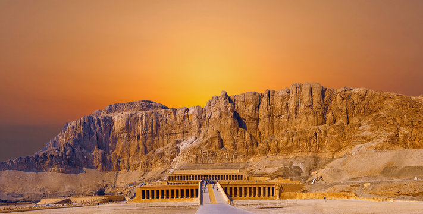
Temple of Hatshepsut
The Temple of Hatshepsut is one of the most unique and elegant monuments in ancient Egypt. It is located at Deir el-Bahari on the west bank of Luxor and was built during the 15th century BC for Pharaoh Hatshepsut, one of the few female pharaohs in Egyptian history. The temple is designed in a series of terraces built into the cliffs, connected by long ramps. This architectural style is very different from other Egyptian temples, making it stand out as a masterpiece of ancient design. The walls of the temple are decorated with detailed reliefs that tell the story of Hatshepsut’s reign, including her famous expedition to the Land of Punt for trade. The temple was also dedicated to the god Amun-Ra and was used for religious rituals and ceremonies. Today, it is considered one of the most beautiful and important archaeological sites in Egypt, reflecting both the power of Hatshepsut and the innovation of ancient Egyptian architecture.

Luxor Temple
Luxor Temple is one of the most famous ancient Egyptian temples, located in the heart of modern Luxor on the east bank of the Nile River. It was built mainly during the reign of Pharaoh Amenhotep III in the 14th century BC and later expanded by Ramesses II. The temple was dedicated to the rejuvenation of kingship and the god Amun-Ra. The temple is known for its grand entrance called the First Pylon, which is decorated with massive statues of Ramesses II and a large obelisk (its twin is now in Paris). Inside, there are courtyards, colonnades, and halls filled with carvings and hieroglyphs that depict religious ceremonies and royal events. Luxor Temple was an important center for the Opet Festival, during which statues of the gods were carried from Karnak Temple to Luxor Temple to celebrate the divine power of the pharaoh. Today, it is one of Egypt’s most well-preserved temples and is beautifully illuminated at night, making it a major attraction for visitors
.jpg.jpeg)
Temple of Dendera
The Temple of Dendera is one of the most beautiful and well-preserved ancient Egyptian temples, located near the city of Qena on the west bank of the Nile River. It was mainly built during the late Ptolemaic period and completed in the Roman period, around the 1st century BC to the 1st century AD. The temple is dedicated to the goddess Hathor, the goddess of love, music, fertility, and healing. The temple is famous for its massive stone structure, colorful ceilings, and detailed carvings that are still clearly visible today. One of its most remarkable features is the astronomical ceiling in the main hall, which shows ancient Egyptian constellations and zodiac signs. The walls also contain scenes of religious rituals, offerings, and royal ceremonies. The Temple of Dendera was built on top of much older temple structures, showing its long history of religious importance. Today, it is considered one of the most complete and visually stunning temples in Egypt, offering a clear view of ancient Egyptian religious art and architecture.

Temple of Edfu
The Temple of Edfu is one of the best-preserved ancient temples in Egypt, located in the city of Edfu between Luxor and Aswan on the west bank of the Nile River. It was built during the Ptolemaic period between 237 and 57 BC and is dedicated to the falcon god Horus, one of the most important deities in ancient Egyptian mythology. The temple is known for its impressive scale and well-preserved structure, including a massive entrance pylon decorated with detailed carvings and inscriptions. Inside, it contains large courtyards, hypostyle halls, and sanctuaries that illustrate the mythological battle between Horus and Set, symbolizing the victory of good over evil. Because it was buried under sand for centuries, the Temple of Edfu remained almost completely intact when it was rediscovered. Today, it is considered one of the finest examples of ancient Egyptian temple architecture and provides valuable insight into religious life during the Ptolemaic era.
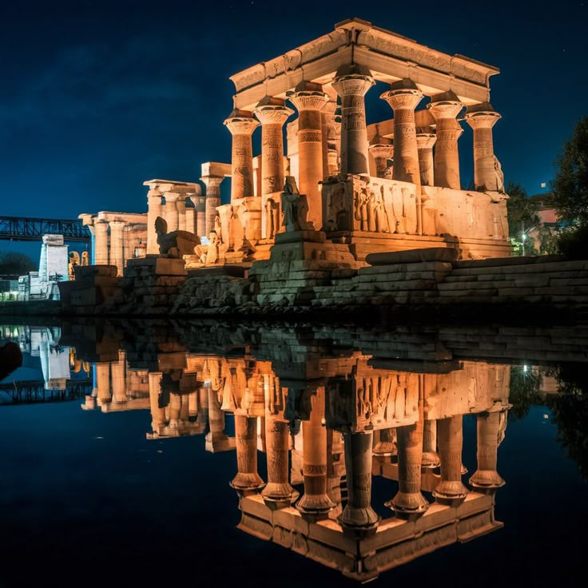
Temple of Philae
The Temple of Philae is one of the most beautiful ancient temples in Egypt, located near Aswan on an island in the Nile River. It was mainly built during the Ptolemaic period and later completed in the Roman era, around the 4th century BC to the 3rd century AD. The temple was dedicated to the goddess Isis, one of the most important deities in ancient Egyptian religion. The temple complex is known for its elegant architecture, including grand pylons, courtyards, and detailed reliefs that show myths related to Isis and Osiris. The carvings and decorations reflect religious ceremonies, offerings, and the divine role of the goddess Isis as a protector and mother figure. In the 1960s, the entire temple was relocated to Agilkia Island to save it from being submerged due to the construction of the Aswan High Dam. Today, the Temple of Philae is a UNESCO World Heritage Site and remains one of the most visited and admired ancient monuments in Egypt.
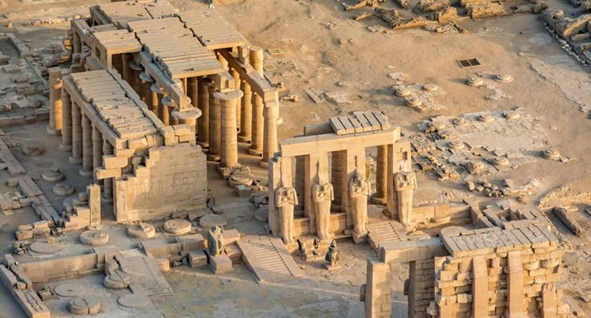
Ramesseum
The Ramesseum is a large mortuary temple located on the west bank of Luxor, Egypt. It was built during the reign of Pharaoh Ramesses II in the 13th century BC. The temple was dedicated to the god Amun and to the legacy of Ramesses II himself, who is considered one of the most powerful pharaohs of ancient Egypt. The temple complex originally included massive courtyards, halls, statues, and storage rooms. One of its most famous features is the fallen colossal statue of Ramesses II, which once stood about 17 meters tall. The walls of the temple are decorated with detailed reliefs showing scenes from the Battle of Kadesh, one of Ramesses II’s most famous military victories. Although much of the Ramesseum is now in ruins, it remains an important archaeological site that provides valuable insight into ancient Egyptian temple architecture and royal propaganda during the New Kingdom period.
.jpg.jpeg)
Temple of Kom Ombo
The Temple of Kom Ombo is a unique double temple located on the east bank of the Nile River in Upper Egypt, near the city of Aswan. It was built during the Ptolemaic period, around the 2nd century BC, and later modified by the Romans. What makes this temple special is that it is dedicated to two different gods at the same time: Sobek, the crocodile god, and Horus the Elder, the falcon-headed god. The temple is perfectly symmetrical, with two identical entrances, halls, and sanctuaries—one side for each god. The walls are decorated with detailed carvings showing medical instruments, religious rituals, and scenes of daily life in ancient Egypt. This makes Kom Ombo one of the most interesting temples for understanding ancient Egyptian science and religion. Near the temple, there is also a Crocodile Museum that displays mummified crocodiles, showing the importance of the god Sobek in the region. Today, the Temple of Kom Ombo is a popular tourist attraction and a unique example of dual worship in ancient Egyptian architecture.

Temple of Seti I (Abydos)
The Temple of Seti I is located in Abydos, one of the most sacred ancient sites in Egypt. It was built during the 19th Dynasty by Pharaoh Seti I and later completed by his son Ramesses II around the 13th century BC. The temple was dedicated to several important gods, especially Osiris, the god of the afterlife. The temple is famous for its beautiful and highly detailed reliefs, which are considered some of the finest examples of ancient Egyptian art. One of its most important features is the Abydos King List, a chronological list of many Egyptian pharaohs carved on the temple walls, which is very valuable for historians studying ancient Egypt.The structure includes multiple halls, sanctuaries, and courtyards, each richly decorated with religious scenes and carvings. The Temple of Seti I reflects both the religious importance of Abydos and the artistic achievements of the New Kingdom period, making it one of the most significant temples in Egypt.
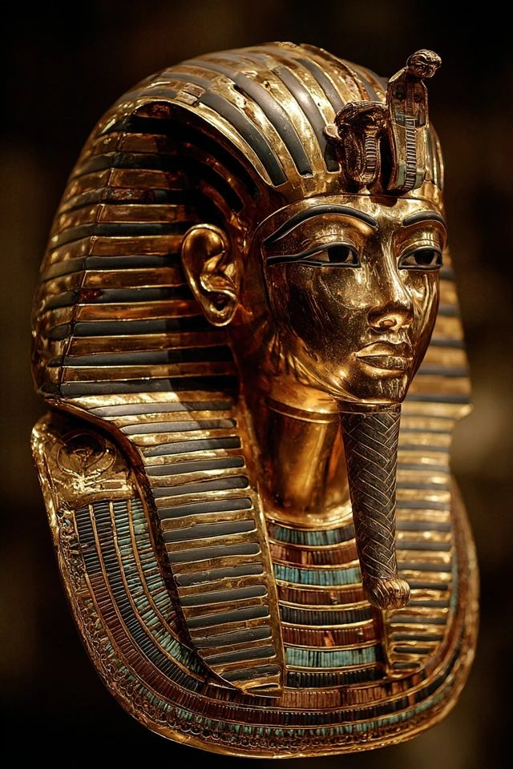
Tutankhamun
Tutankhamun was a young Egyptian pharaoh of the 18th Dynasty who ruled around 1332–1323 BC. He became king at a very early age, about nine years old, and ruled for a short period of time. Despite his brief reign, he is one of the most famous pharaohs in history. Tutankhamun is best known for his nearly intact tomb, discovered in 1922 by archaeologist Howard Carter in the Valley of the Kings. The tomb contained thousands of treasures, including his iconic golden mask, jewelry, chariots, and statues, giving historians valuable insight into ancient Egyptian culture and burial practices. During his reign, Tutankhamun restored traditional Egyptian religion after the religious changes introduced by his predecessor Akhenaten. Although he did not achieve major military or political success, his legacy became legendary because of the extraordinary discovery of his tomb. Today, he remains one of the most recognized figures of ancient Egypt worldwide.

Ramesses II
Ramesses II, also known as Ramesses the Great, was one of the most powerful and famous pharaohs of ancient Egypt. He ruled for about 66 years during the 19th Dynasty (1279–1213 BC), making his reign one of the longest in Egyptian history. He is often remembered as a symbol of strength, leadership, and monumental building. Ramesses II was a great military leader, best known for the Battle of Kadesh against the Hittites. Although the battle ended without a clear victory, it led to one of the earliest known peace treaties in history. His reign was also marked by stability and prosperity, allowing him to focus on massive construction projects across Egypt. He built many impressive monuments, including the famous Abu Simbel Temples and the Ramesseum

Thutmose III
Thutmose III was one of the greatest pharaohs of ancient Egypt and ruled during the 18th Dynasty (around 1479–1425 BC). He is often called the “Napoleon of Egypt” because of his exceptional military skills and successful campaigns. He expanded Egypt’s empire to its greatest extent, reaching parts of Syria and Mesopotamia. He led many military campaigns, with his most famous victory at the Battle of Megiddo, which demonstrated his strategic intelligence and leadership. Through these campaigns, Egypt became one of the most powerful empires in the ancient world. In addition to his military achievements, Thutmose III was also a great builder. He added many structures to the Karnak Temple Complex, including temples, obelisks, and detailed inscriptions that recorded his victories. Today, he is remembered as both a brilliant general and a powerful ruler who greatly strengthened ancient Egypt.

Amenhotep III
Amenhotep III was one of the most powerful and wealthy pharaohs of ancient Egypt, ruling during the 18th Dynasty (around 1390–1353 BC). His reign is often considered a golden age of peace, prosperity, and artistic achievement. Unlike many other pharaohs, he focused more on diplomacy and building projects rather than military campaigns. He is famous for his massive construction works across Egypt, especially in Luxor. One of his most well-known monuments is the Colossi of Memnon, two giant seated statues that once stood at the entrance of his mortuary temple. He also expanded parts of the Karnak Temple and built luxurious palaces. Amenhotep III encouraged art, culture, and international relations, maintaining strong connections with other kingdoms through diplomacy and marriage alliances. His reign represents a peak in ancient Egyptian civilization, marked by stability, wealth, and remarkable architectural achievements.

Khafre
Khafre was an ancient Egyptian pharaoh of the 4th Dynasty who ruled around 2558–2532 BC. He was the son of Pharaoh Khufu, the builder of the Great Pyramid, and he continued the tradition of monumental construction during the Old Kingdom period. Khafre is best known for building the Pyramid of Khafre, the second-largest pyramid at Giza. Although it is slightly smaller than his father’s pyramid, it appears taller because it was built on higher ground. Parts of its original smooth limestone casing can still be seen at the top. He is also closely associated with the Great Sphinx of Giza, which many historians believe was built during his reign and may represent his face. Statues of Khafre, especially the famous seated diorite statue, show him with a calm and powerful expression, symbolizing royal authority and divine protection.
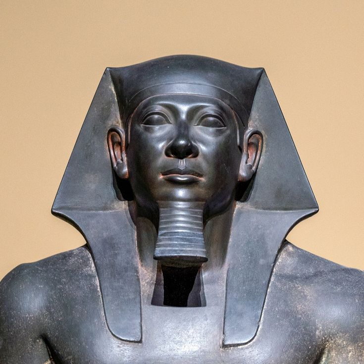
Menkaure
Menkaure was an ancient Egyptian pharaoh of the 4th Dynasty who ruled around 2532–2503 BC. He was the son of Khafre and the grandson of Khufu, continuing the royal line that built the famous pyramids of Giza. He is best known for constructing the Pyramid of Menkaure, the smallest of the three main pyramids at Giza. Despite its smaller size, the pyramid was built with high-quality materials, including limestone and granite, reflecting careful craftsmanship. Menkaure is also known for his remarkable statues, especially the triad statues that show him standing between the goddess Hathor and a regional deity. These statues are considered some of the finest examples of ancient Egyptian sculpture, highlighting balance, symmetry, and artistic precision.

Ahmose I
Ahmose I was an important ancient Egyptian pharaoh and the founder of the 18th Dynasty (around 1550–1525 BC). He is best known for driving the Hyksos out of Egypt, ending their rule and reunifying the country. Because of this, he is considered the founder of the New Kingdom, one of the most powerful periods in ancient Egyptian history. Ahmose I led military campaigns to secure Egypt’s borders and strengthen its position as a major power. His victories brought stability and allowed Egypt to expand its influence beyond its traditional borders. He also began many building projects and restored temples that had been damaged during the Hyksos period. Although fewer statues of Ahmose I survive compared to later pharaohs, he is still remembered as a national hero who rebuilt and strengthened ancient Egypt.
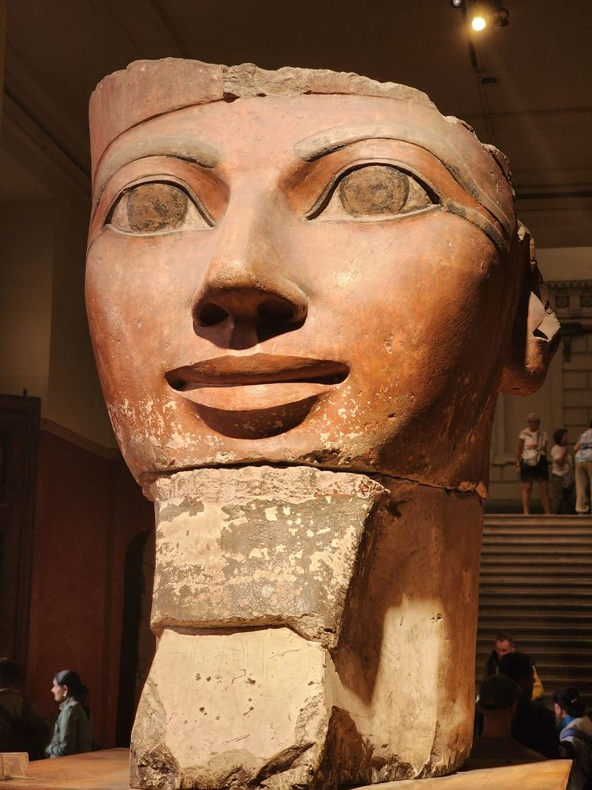
Hatshepsut
Hatshepsut was one of the most successful and unusual pharaohs of ancient Egypt. She ruled during the 18th Dynasty (around 1479–1458 BC) and is famous for being one of the very few women to take the full title of pharaoh. She originally ruled as regent for her stepson Thutmose III, but later became the dominant ruler of Egypt. Her reign was marked by peace, trade, and major building projects rather than military expansion. One of her greatest achievements was a successful trading expedition to the Land of Punt, which brought valuable goods like incense, gold, and exotic animals to Egypt. Hatshepsut is also known for her magnificent temple, the Temple of Hatshepsut, which is considered one of the most beautiful architectural works in ancient Egypt. Her statues often show her wearing traditional male pharaoh attire, including the false beard, to emphasize her authority as king.

Nefertiti
Nefertiti was one of the most famous queens of ancient Egypt. She was the Great Royal Wife of Pharaoh Akhenaten during the 18th Dynasty (around 1350 BC). She is best known for her beauty, influence, and important role in religious changes during her husband’s reign. Nefertiti and Akhenaten introduced a new form of worship focused on the sun god Aten, which was a major shift from traditional Egyptian religion. She was not just a queen but also a powerful political and religious figure who may have ruled Egypt on her own for a short time after Akhenaten. She is most famous today for her beautifully crafted bust, which was discovered in Amarna and is now displayed in a museum in Berlin. This sculpture is one of the most iconic artworks of ancient Egypt and a symbol of elegance and royal beauty.

Djoser
Djoser was an ancient Egyptian pharaoh of the 3rd Dynasty who ruled around 2670 BC during the Old Kingdom period. He is one of the most important rulers in early Egyptian history because he introduced major developments in architecture and state organization. He is best known for commissioning the Step Pyramid of Djoser, located in Saqqara. This pyramid is considered the earliest large-scale stone structure in Egypt and the first pyramid ever built. It was designed by the famous architect Imhotep and originally started as a simple mastaba before being expanded into a six-step structure. Djoser’s reign marked a turning point in ancient Egyptian architecture, moving from mudbrick tombs to monumental stone construction. His pyramid complex also included temples, courtyards, and ceremonial buildings, showing the growing complexity of royal burial traditions in ancient Egypt.
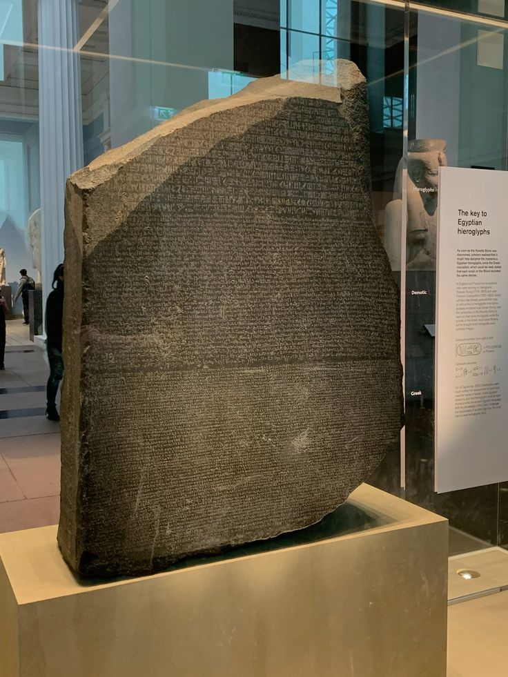
Rosetta Stone
The Rosetta Stone is one of the most important archaeological discoveries in history. It was discovered in 1799 near the town of Rosetta (Rashid) in Egypt by French soldiers during Napoleon’s campaign. The stone dates back to 196 BC during the Ptolemaic period. It is famous because it contains the same text written in three scripts: Ancient Greek, Egyptian Demotic, and Egyptian Hieroglyphs. This allowed scholars to finally decode ancient Egyptian hieroglyphs, which had been a mystery for centuries. The Rosetta Stone is made of black granodiorite and originally was part of a larger stele. Today, it is displayed in the British Museum in London and is considered the key that unlocked the understanding of ancient Egyptian language and history.
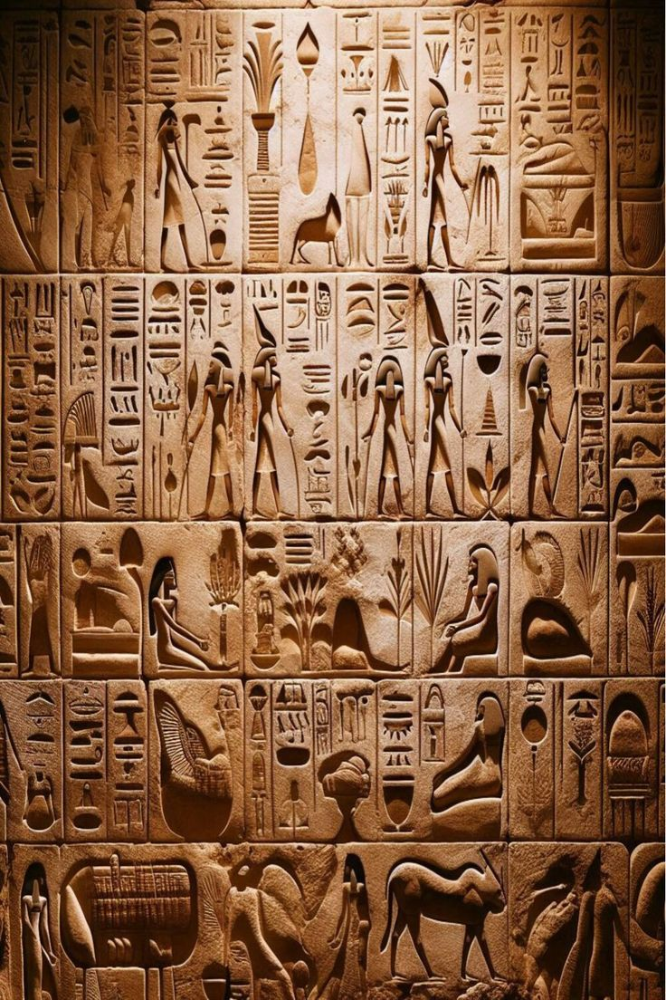
Egyptian Hieroglyphs
Egyptian Hieroglyphs are one of the oldest writing systems in the world, developed by the ancient Egyptians around 3200 BC. They were used for more than 3,000 years to write religious texts, official records, and inscriptions on temples and tombs. Hieroglyphs are made up of pictures and symbols that can represent sounds, words, or ideas. Some symbols stand for objects, while others represent letters or combinations of sounds. This made the writing system complex and highly artistic at the same time. They were mainly carved on stone monuments and temple walls, such as those in the Karnak and Luxor temples. Because they were considered sacred, hieroglyphs were often used in religious and royal contexts. The meaning of hieroglyphs was lost for centuries until the discovery of the Rosetta Stone helped scholars decode them in the 19th century. Today, Egyptian hieroglyphs are a key part of understanding ancient Egyptian civilization and culture.
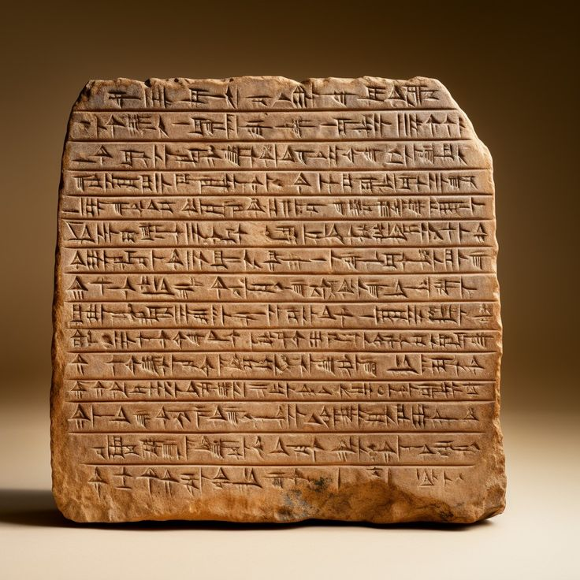
Coptic language
The Coptic language is the final stage of the ancient Egyptian language and was spoken in Egypt from around the 2nd century AD. It developed from earlier Egyptian languages but was written using the Greek alphabet with a few additional letters taken from Demotic script. Coptic was widely used in daily life, religion, and literature, especially after the spread of Christianity in Egypt. It became the main language of Egyptian Christians and is still used today in the liturgy of the Coptic Orthodox Church. Over time, Arabic replaced Coptic as the spoken language in Egypt after the Islamic conquest in the 7th century, but Coptic remained as a religious language. Today, it is considered a very important link to ancient Egyptian civilization because it preserves many elements of the original Egyptian language.